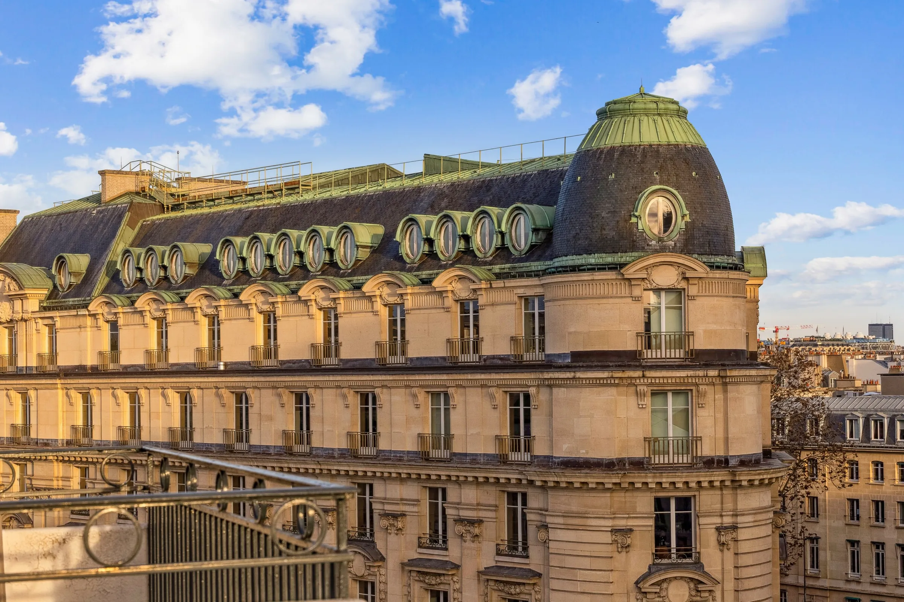
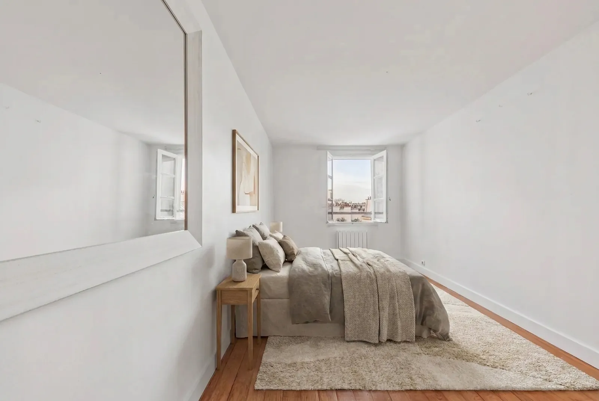
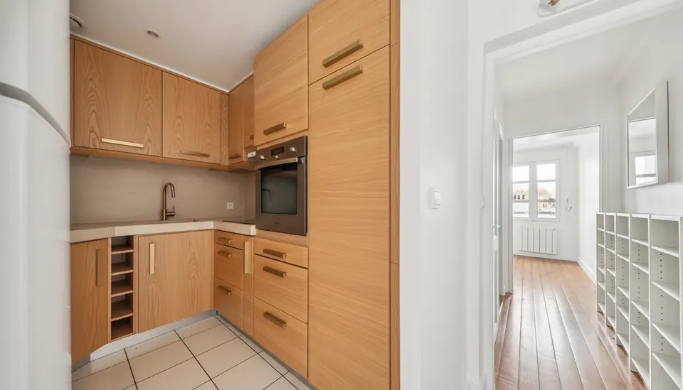
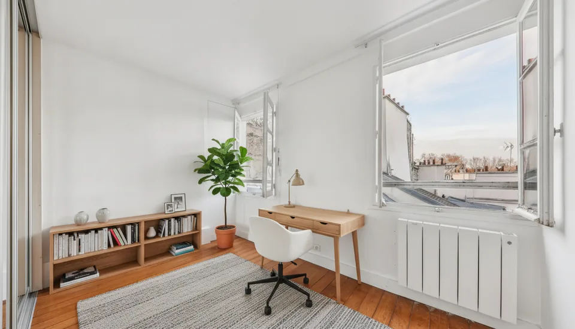
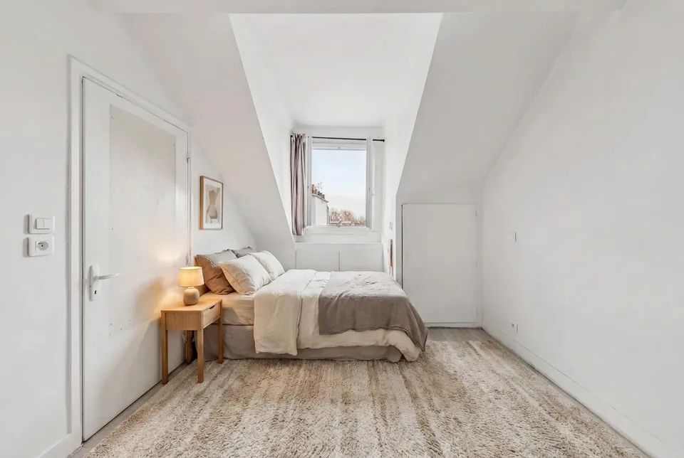

Paris VII · Saint-Thomas d'Aquin
42, rue du Bac
Deux appartements réunissables, 109 m² au sol aux deux derniers étages, face au musée d'Orsay.
La visite
Un vol continu du séjour du 5ᵉ jusqu'à la chambre mansardée du 6ᵉ, tourné depuis les photographies du bien. Aucune pièce inventée.
Les deux appartements
Photographies du bien, telles quelles, étage par étage. Chacune s'ouvre en plein écran.
L'immeuble
Le 5ᵉ étage
64,05 m² CarrezLe 6ᵉ étage
37,47 m² CarrezLes vues
L'essentiel
Deux appartements indépendants aux deux derniers étages d'un immeuble de 1830 en pierre de taille, avec ascenseur et gardien. Traversants, lumineux, à rénover : 101,52 m² Carrez (109,29 m² au sol) à composer selon votre projet.
Réunir — une seule adresse familiale sur les deux derniers étages.
Diviser — jusqu'à 4 studios locatifs : les lots 11 et 12 au 5ᵉ, 153 et 154 au 6ᵉ existent déjà (relevé géomètre-expert, juillet 2026). Le 6ᵉ étant classé F, sa mise en location seule suppose des travaux de rénovation énergétique.
Le 5ᵉ étage
- Loi Carrez
- 64,05 m²
- Surface au sol
- 64,55 m²
- Pièces
- Séjour, cuisine, chambre, bureau
- Bains
- Salle d'eau · WC
- DPE
- D187 kWhEP/m²/an
- GES
- A5 kgeqCO₂/m²/an
- Énergie estimée
- 760 à 1 080 €/an
- Diagnostics
- 22/01/2024
Le 6ᵉ étage
- Loi Carrez
- 37,47 m²
- Surface au sol
- 44,74 m²
- Pièces
- Séjour avec cuisine, chambre
- Bains
- Salle de douche · WC
- DPE
- F392 kWhEP/m²/an
- GES
- C12 kgeqCO₂/m²/an
- Énergie estimée
- 920 à 1 280 €/an
- Diagnostics
- 26/04/2024
Immeuble & copropriété
- Construction
- 1830, pierre de taille
- Services
- Gardien, ascenseur
- Sécurité
- Digicode, interphone, Vigik
- Chauffage
- Collectif, radiateurs
- Menuiseries
- Double vitrage · fibre optique
- Annexes
- 2 caves
- Composition du bien
- 5 lots : nos 11 et 12 au 5ᵉ, nos 153, 154 et 155 au 6ᵉ
- Division du 6ᵉ
- Relevé géomètre-expert, juillet 2026. Cloisons à édifier, modificatif à publier.
- Occupation
- Libre à la vente
1 995 000 €
Soit 19 650 €/m² Carrez · 18 250 €/m² au sol · Présenté par SAS YP
Les plans
Relevé du géomètre-expert (Cabinet FLF, juillet 2026), redessiné. Le lot historique du 6ᵉ a été subdivisé en trois lots — dont un lot de desserte donnant sur le palier commun : le studio indépendant du 6ᵉ n'est plus une hypothèse, c'est une configuration actée.
64,05 m² Carrez · les deux plans sont à la même échelle. Touchez pour agrandir.
37,47 m² Carrez · cloisons à édifier, modificatif de copropriété à publier. Touchez pour agrandir.
Projections
Le potentiel des volumes, meublés virtuellement sur les photographies réelles. L'architecture — murs, fenêtres, poutres — n'est jamais modifiée.




Aménagements virtuels générés par IA sur les photographies du bien, indicatifs et non contractuels.